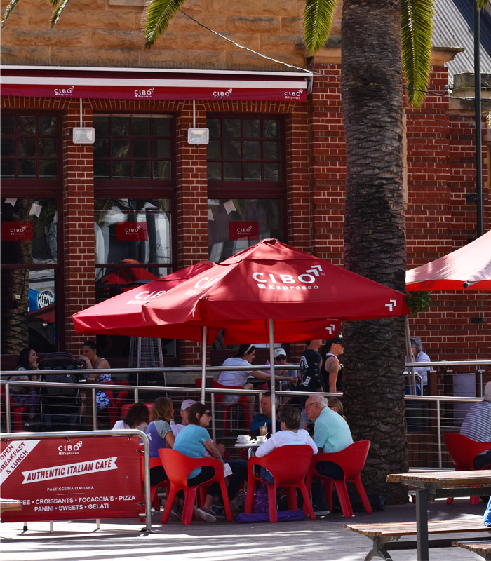
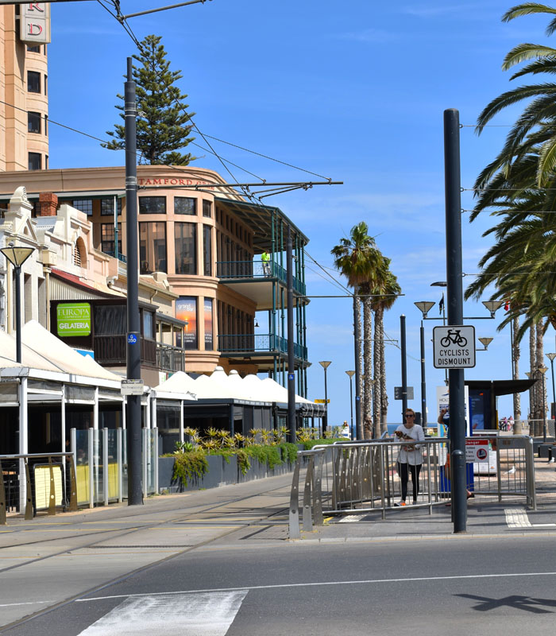
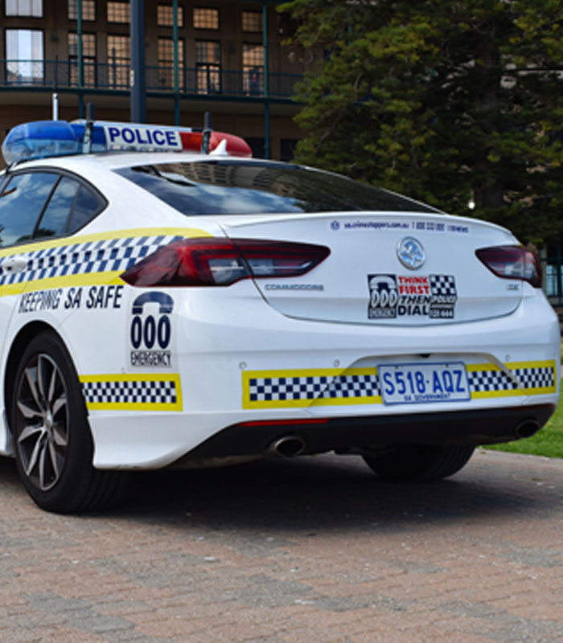

Photograph Analysis

Cibo Shop Front With Patrons
- F-Stop: f/9
- Exposure Time: 1/320 sec.
- ISO Speed: ISO-180
- Focal Length: 70mm
- Max Aperture: 4.3
- 35mm Focal Length: 105mm
When taking this image I had to tried various angles and locations, I tried further left near the other restaurant and far right to where the end of the Tram Station Platform was, I finally chose the middle of the Tram Station Pad, angles were another important thing, as certain parts of the nearby area weren't perfetly flat and were uneven I had to manipulate the height of the tripod, another issue was foot-traffic, there are still people walking around here as evident by the people sitting down, so I often had to wait for people to walk through before being able to take my photographs. When editing the photograph I had issues with brightness, the image was too dark and colours appeared washed out, so in Photoshop I raised up Brightness, increased Vibrance and Saturation to increase the quality of the photograph.

Cibo Shop Front With Patrons
- F-Stop: f/9
- Exposure Time: 1/250 sec.
- ISO Speed: ISO-100
- Focal Length: 55mm
- Max Aperture: 5
- 35mm Focal Length: 82mm
When taking the photograph of the Banners I didn't realise at the time when I took them that the road signs were going to be a big distraction and I didn't get anymore images of the banner without the Police Car being present where I should've taken more without distractions, other issues were passing vehicles on the road and pedestrians walking in the way of my view of focus, when editing the image I focused the brightness to make it lighter and then darker to make image look better along with raising the Vibrance and Saturation to give it nice deep colours.

Glenelg Founding & War Memorials
- F-Stop: f/9
- Exposure Time: 1/250 sec.
- ISO Speed: ISO-100
- Focal Length: 24mm
- Max Aperture: 3.9
- 35mm Focal Length: 36mm
When taking photographs of the Memorial Monument I had to get the entire thing included in the photograph, but in doing this I needed to get my camera on a level position with the tripod which was difficult considering the tiles for the upper-beach area were not level, I was able to get a some-what flat photograph with the tripod, during editing I darkened and brightened the image again to make it look sharper, I increased the Contrast and Saturation to also make the photograph have a better sense of depth to it.

Underneath the Glenelg Wharf
- F-Stop: f/9
- Exposure Time: 1/250 sec.
- ISO Speed: ISO-140
- Focal Length: 300mm
- Max Aperture: 5.3
- 35mm Focal Length: 450mm
This Photograph wasn't planned but was taken in the moment to show the amazing areas you can visit while on Glenelg Beach, you aren't just confined to the sand and the shore when you are visiting, you are confined to your imagination. You can explore as this grandparent did with his grandchild at the waters edge under the Wharf, to get this image perfect I had to take several upon several images from different focal lengths and adjustments of the Camera tripod, when editing I made things darker and again brighter but drastically increasing the Vibrance/Contrast and Saturation to make the water appear more tropical and the barnicals on the wooden support beams pop-out more.

{kind=link}
{kind=link}
{kind=link}
{kind=link}
The Glenelg Wharf Poles
- F-Stop: f/9
- Exposure Time: 1/250 sec.
- ISO Speed: ISO-100
- Focal Length: 300mm
- Max Aperture: 5.3
- 35mm Focal Length: 450mm
{kind=link}
I was experimenting with view shots when I decided upon taking this image, it shows two people who I assume were a couple sitting down on the Wharf with their legs dangling over the edge as they were talking while people to the right of them crab fish. I tried different angles and heights when taking this photograph and the multiple other versions of this photograph. I opened it in Photoshop to increase the Vibrance and Contrast to make the water appear brighter and the sky, which helped improve the photograph along with changing the Saturation.
Design, Development and Planning
Insightful Ideas
There were insightful ideas that helped me with obtaining my photographs, such insightful ideas included taking as many photographs as I could of one chosen object at a time to obtain the final optimal photograph out of said multiple photographs, other insightful ideas included dragging viewers attention to certain areas of the photograph, for example with the photo on the Home Page for this website I dragged everyones attention to the people and the trees in the image.


Ethical Considerations
There are several ethical considerations to consider when taking Photographs in South Australia, there are several laws to protect Photographers when taking street/tourism photographs. Althought I've had to think about the ethical dilemma of people not being aware they are being photographed, or are they fine with knowing if they are being photographed and what happens if I am approached by the people I am taking a photograph of?. These are the few ethical dilemmas that I had to consider out of several.

